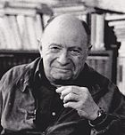
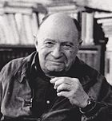

Monsieur Philo
Philosopher est difficile, mais n'est pas l'apanage des gens qui ont étudié la philosophie. Cela peut aider tout de même de lire des grands philosophes, ou de grands écrivains. Toutefois, modestement, nous pouvons nous interroger sur de nombreux sujets dans le monde complexe dans lequel nous vivons, survivons, et biens des fois nous débatons (au sens de se débatre).
En lisant divers journaux, en écoutant la radio, en regardant la télévison ou en naviguant sur le Web, nous avons à disposition une énorme quantité d'information. Certains disent que ceci conforte une "pensée unique". Mais devant ce flux, nous ne sommes ni forcés d'adhérer (position du mouton) ou de nous révolter et tout rejeter (position complotiste).
Nous pouvons prendre le temps de réfléchir; lors de temps calme, bricolage, jardinage, farniente, voire sports nécessitant une concentration relachée, nous pouvons prendre un sujet qui nous taraude et simplement le dérouler, tirant et démèlant comme un écheveau, arrrivant sur des ramifications conduisant à des disgressions.
Arriver à une conclusion n'est pas nécessaire, seul le chemein est essentiel
Je vous propose donc de vous retrouver dans vos salles polyvalentes, théatres, cinémas pour des conférences interactives

 
